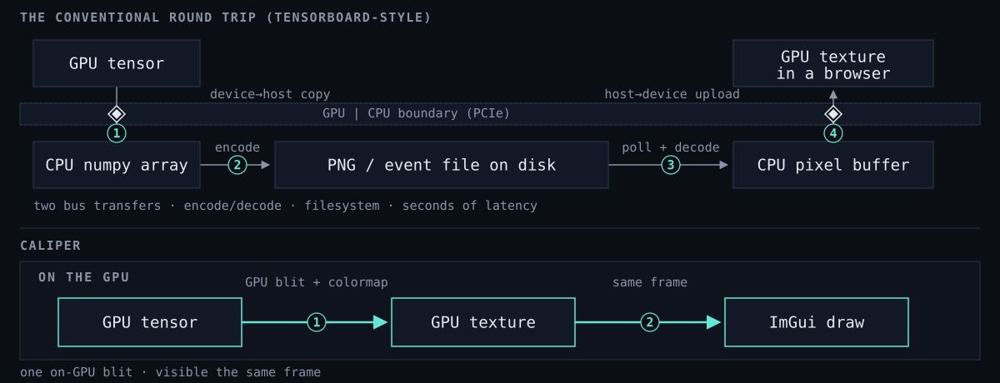
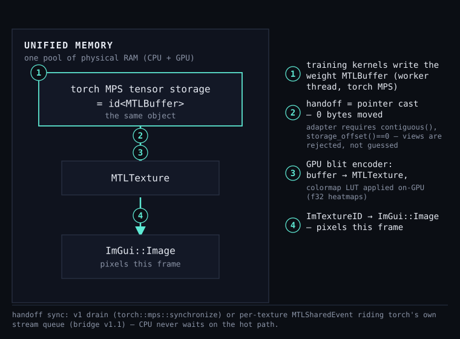
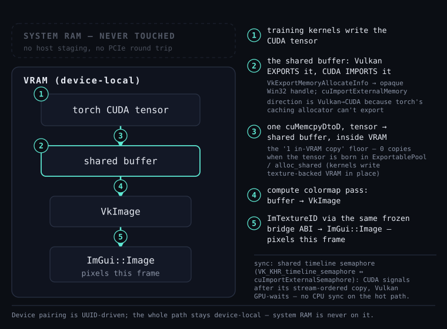

Applet runtime
Loads shared-library applets, checks their manifests and ABI epoch, and negotiates required services before launch.
Caliper / C++ / Metal / Vulkan
Caliper hosts C++ applets in the same frame loop as training. Its tensor bridge turns GPU-resident tensors into live ImGui textures on native Metal and Vulkan backends.
Source available · no packaged release
01 / Overview
The host owns the window, rendering backend, UI contexts, and frame clock. Applets provide tools and compute through a small C ABI.
Loads shared-library applets, checks their manifests and ABI epoch, and negotiates required services before launch.
Turns validated tensor descriptors into opaque texture IDs. Native backends keep dense views off the CPU staging path; the OpenGL fallback stages inside the host.
Provides common contracts for jobs, metrics, device selection, artifacts, tabular data, exports, and host telemetry.
02 / Frame path
On native backends, Caliper hands tensor data to the renderer without a host-memory round trip. Colormap and blit work remains on the GPU, and ImGui receives the resulting texture in the same frame.
Curve and scatter coordinates may still use small CPU arrays. The GPU-resident path applies to dense image and geometry views.
Tensor bridge reference
03 / Native backends
Graphics APIs stay behind the host renderer. Applets use the same tensor and UI contracts on both platforms.
macOS / Metal

The Metal renderer is the macOS default. The bridge validates layout and device information before using the buffer; unsupported inputs are rejected instead of reinterpreted.
Windows / Vulkan

Vulkan exports device-local memory for CUDA import and uses a shared timeline semaphore for GPU-side ordering. Device pairing is UUID-based; mismatches disable interop instead of crossing adapters.
04 / Reference
Tutorials for building applets, ABI and service reference, renderer architecture, compatibility rules, and the project decision log.